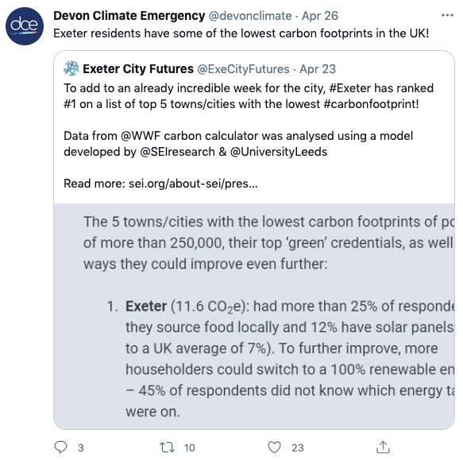
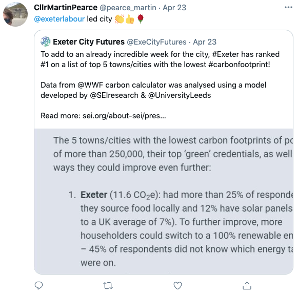

As David Attenborough reminded COP26 delegates on Monday, what matters most in climate change is the amount of carbon we release into the atmosphere. The message was simple: we have to cut our carbon emissions rapidly and we have to cut them now.
It is in this context that Exeter’s Green Party councillors have called for a carbon budget for the city, based on properly calculated baseline emissions and specifying the annual reductions required to meet its decarbonisation goals.
They are also calling for an annual report which demonstrates progress towards these goals and evaluates the degree to which the city’s existing decarbonisation plan, the Net Zero Exeter plan produced by Exeter City Futures, is contributing towards them.
Councillor Diana Moore said: “In 2019 the UN called for a 7.6% reduction in greenhouse gas emissions every year between 2020 and 2030 to limit global warming to 1.5°C. However, we simply have no idea if Exeter has made any progress towards that goal.”
Councillor Amy Sparling added: “Just as we need international agreements to succeed we must also take a rigorous approach locally. We believe that a carbon budget for the city is an important evidence-based approach.”
In this article we consider the approach taken by Exeter City Council and Exeter City Futures thus far, look at emerging criticisms of “net zero” policies and outline what a proper carbon budget-based emissions reduction plan for Exeter might look like.
We also suggest that, should the council and its partners want Exeter “to be recognised as a leading sustainable city and global leader in addressing the social, economic and environmental challenges of climate change and urbanisation”, as they claim, it is high time that they consulted some of the city’s many climate scientists on how to frame such a plan.
In July 2019, the city council commissioned Exeter City Futures to conduct a full audit of the city’s current carbon emissions to identify its “baseline state” as well as to “highlight gaps between current plans and what is required to achieve zero carbon”.
This audit was a key component of the city’s response to the climate emergency: the decision to commission it was discussed and approved at no fewer than four city council meetings.
Exeter City Futures had said it would assemble an academic team with the requisite specialist expertise to establish a “robust definition of what is included in the measurement of Exeter’s carbon emissions” and “how this accounts for the carbon emissions created in the wider region by commuters” as well as a measurement framework to make sense of all the data.
However it later admitted, in a December 2019 progress report, that it did not have the “resource capacity” to deliver the promised audit. Nor did it assemble an expert academic team to define the city’s carbon footprint or produce the framework.
The council committee which considered the report had nothing to say about these failures.
While the Net Zero Exeter plan that Exeter City Futures subsequently produced, and which the council adopted in July last year, acknowledged that “a more comprehensive assessment of the carbon cost will need to be undertaken”, the total of all projected carbon savings from the actions it proposed amount to just 329,000 tonnes of carbon dioxide equivalent (tCO2e).
The lack of alignment between the plan’s proposed actions and Exeter’s emissions is reflected in its presentation: almost all the actions it proposes are framed as vaguely-defined activities, rather than focussed on specific outcomes, and very few include quantifiable measures of success.
The plan does not mention the impact of Exeter Airport. A University of Exeter study estimated the airport’s 2016 emissions as around 9% of Devon’s total transport emissions. This suggests it was responsible for more than 200,000tCO2e of emissions in 2019 alone.
Nor does the plan address the consumption habits of Exeter’s residents. In 2016 the ONS estimated that 40% of the UK’s carbon footprint related to imported emissions while DEFRA found the proportion had risen to 43% two years later.
Exeter City Council climate credentials claim on St Sidwells Point development hoarding
Following its adoption, Exeter City Futures commissioned a review of the Net Zero Exeter plan by engineering consultants WSP which assessed ten of the plan’s “priority actions”.
The primary recommendation of the WSP report, which has not been published, was that a baseline model of Exeter’s greenhouse gas emissions should be created to “allow better analysis and comparison of actions, as well as mapping of ‘business as usual’ and tracking of progress”.
Its feedback included that “clarity would be useful on why goals are chosen” and that the overall carbon emissions reduction claims needed “recalculating”.
The Net Zero Exeter plan acknowledges that it has limitations, and that it is incomplete work in progress that requires further input and development. However an update was promised by December 2020 and there is still no sign of it nearly a year later.
Since Exeter City Futures unilaterally decided to adopt the term “net zero” to describe Exeter’s decarbonisation plan, against the wishes of city councillors, the term has become the subject of significant criticism.
In April James Dyke, Assistant Director of the Global Systems Institute at the University of Exeter, co-authored a landmark article criticising the concept of net zero as a “dangerous trap” that “has licensed a recklessly cavalier ‘burn now, pay later’ approach which has seen carbon emissions continue to soar”.
The article’s authors said: “Current net zero policies will not keep warming to within 1.5°C because they were never intended to. They were and still are driven by a need to protect business as usual, not the climate.
“If we want to keep people safe then large and sustained cuts to carbon emissions need to happen now. That is the very simple acid test that must be applied to all climate policies. The time for wishful thinking is over.”
The article provoked intense debate. Greta Thunberg said it was “one of the most important and informative texts I have ever read on the climate and ecological crises” and warned that “net zero targets” are “being used as excuses to postpone real action”.
Then in May a survey of 300 climate experts found that 79% thought governments and companies should set separate emissions reduction and offsetting targets to address the risks created by “net zero” policies relying on carbon removal to balance the books.
We have nevertheless since been confronted with the spectacle of Saudi Arabia pledging to reach “net zero” by 2060 without diminishing its position as the world’s leading oil producer, and the chancellor announcing that the UK would become “the world’s first net zero financial centre” without requiring companies or financial institutions to decarbonise or imposing any restrictions which would prevent private investment in fossil fuel development projects.
Oil refinery in Pembrokeshire
Part of the challenge in getting decarbonisation policy right is that climate science is not widely understood, enabling greenwashing and misinformation to mislead many.
An advertising agency invented the idea of personal carbon footprints in 2004 as part of a BP marketing campaign called “Beyond Petroleum”, while recent research found that almost half of the 1,700 UK adults surveyed were unable to correctly identify fake climate change news headlines or spot climate-related misinformation they encountered online.
We can see this at work locally in the way Exeter City Futures repeated a claim that Exeter had the lowest carbon footprint among UK towns and cities, found in a joint press release from Stockholm Environment Institute and WWF, without first checking whether it was accurate.
One might think that the headline statement that Exeter was listed as among towns and cities with populations of more than 250,000 might have rung alarm bells, as the city only has 133,000 inhabitants. Instead the city council and its partner organisations, the council leader and its chief executive, several Exeter Labour councillors and many others repeated the claim in turn.
However a cursory examination of the research on which the claim was based turned up several significant issues which would equate (using normative fact-checking methods) to it being somewhere between half true (partially accurate but omitting important details or taking things out of context) and mostly false (containing an element of truth but ignoring facts that would give a different impression).
First, the area identified as “Exeter” is more than 75 miles wide, stretching from Axminster to Bude, and covering a population of 410,000.
Second, research survey respondents were self-selecting, and constituted just 0.68% of the area’s population. No attempt was made to make their responses more representative via demographic weighting or other techniques.
Third, the survey simply captured changes in self-reported behaviour over time. No attempt was made to benchmark survey results against available carbon footprint estimates.
Fourth, perhaps most striking of all, the research concluded that Exeter’s carbon footprint was 11.6tCO2e per person per annum, which would make the city’s total carbon footprint more than 1.5 million tCO2e each year.
This is nearly 1.2 million tCO2e more than the 329,000tCO2e accounted for in the Net Zero Exeter plan, which would mean that all the carbon savings from the actions it proposes put together would equal less than a quarter of the city’s total emissions.

We can also see limited understanding of decarbonisation policy detail in Exeter City Council’s recent decision to scrap its apparent goal of achieving carbon neutral operations by 2022.
The decision was taken not only on the basis that the goal was deemed “unachievable” but also that the council hadn’t actually passed a resolution to achieve it in the first place.
The goal had been on the council’s risk register since November 2019, since when it has been repeatedly reviewed. It seems the council had been confusing its energy policy with an (apparently non-existent) decarbonisation plan for the previous two years.
At the same meeting at which the confusion was discovered, Liberal Democrat councillor Michael Mitchell and Conservative councillor Anne Jobson proposed a new risk register item to monitor the council’s ability to meet the 2030 decarbonisation target set for the city.
While the meeting agreed the proposal, the council said it would not be able to deliver it until March next year.
This is in stark contrast with the claims made by Councillor Rachel Sutton, Executive Portfolio Holder for Net Zero Exeter 2030, in October last year, when she said that Exeter was “in the vanguard of this nationwide challenge” and was “one of the few councils in the country to have set out a road map that was both deliverable and practical”.
These followed a press release in which the council said it had put fighting climate change “at the top of its agenda”, quoting a pledge by Council Leader Phil Bialyk that the “ambition of creating a net zero carbon city by 2030 will be at the heart of everything the council does going forward”.
Perhaps the use of the word “ambition” is revealing? Its Latin root means “to go around (canvassing for votes)”.
Meanwhile the city council and its partners continue to claim, repeatedly, in press releases, policy documents and election manifestos that the Net Zero Exeter plan provides “a clear roadmap to carbon neutrality”.

What would Exeter’s decarbonisation plan actually need to include to deliver the progressive annual carbon budget called for by the city’s Green Party councillors, and thus “a clear roadmap to carbon neutrality”?
First and foremost, as previously identified (and promised), it needs a “robust definition of what is included in the measurement of Exeter’s carbon emissions”.
The UK government uses three key official measures of UK greenhouse gas emissions. BEIS territorial estimates include emissions produced within the UK’s borders, ONS residence estimates cover emissions by UK residents and UK-registered businesses, whether in the UK or overseas, and DEFRA carbon footprint estimates account for the emissions of all goods and services consumed in the UK wherever they are produced in the world.
Of these, carbon footprint estimates provide the most comprehensive emissions accounting basis, but methodologies used to produce them vary and are still being refined.
In their open letter calling for an Exeter carbon budget, Exeter’s Green Party councillors cite a University of Exeter study commissioned by the Devon County Council-led Climate Emergency Response Group to quantify the county’s carbon emissions at local authority level.
However, as the study methodology makes clear, it is based on BEIS territorial estimates, which it only partially extends, without including emissions from aviation, shipping or the net imported emissions which are included in carbon footprint estimates.
Despite excluding these emissions, the county council nevertheless claims that the study findings represent “Devon’s carbon footprint”.
Source: ONS.
More recent research by the Centre for Sustainable Energy and the University of Exeter Centre for Energy and the Environment approaches carbon footprint calculation from the other end of the telescope, by combining household energy use with the behaviours and purchases of people living in particular areas, right down to individual community level.
It therefore includes the impact of goods and services, many of which are imported, such as food, clothing and banking, but its focus on personal and household consumption excludes the emissions from some publicly-funded services like the NHS and other wider economic and financial factors.
This research estimates Exeter’s carbon footprint at 770,000 tCO2e per annum but the emissions it excludes could represent as much as a third of the city’s total, meaning the true figure is likely to be more than a million tonnes each year.
This conclusion is borne out by another, similar, consumption-based footprint calculator produced by the University of Oxford Centre for Research into Energy Demand Solutions in partnership with researchers at the University of Leeds and the University of Manchester.
It also provides estimates at community level, relying on a range of data sources to calculate Exeter’s carbon footprint at just over 1,000,000tCO2e per annum.
The DEFRA figures, which were the basis of the estimate we quoted in last year’s article examining the Net Zero Exeter plan, are for the whole UK so it is only possible to use them on a UK-wide per capita basis.
They have since been updated, as have the ONS population estimates for Exeter. Recalculating the city’s footprint using the new DEFRA and ONS figures gives an annual emissions estimate of 1.4 million tCO2e for the city.
However estimates derived from the DEFRA figures in this way probably represent the upper end of the range of carbon emissions estimates for Exeter because of the city’s relatively low levels of industrial activity.
This means its per capita carbon footprint is likely to be lower than the UK average because other parts of the country have much higher levels of carbon-intensive industrialisation, although it also means that the scope for carbon capture and storage offsetting is limited here too.
On the other hand the city sits at the centre of the second largest travel to work area in the country, with half of all those employed here commuting in each day, almost all by motor vehicle.
Exeter-specific multi-regional economic input and output modelling would be necessary to decide where to allocate responsibility for the emissions generated by commuters who travel into the city to work, particularly as Exeter decision-makers are partly responsible for the economic geography that defines the region.
While methodological differences in what is a developing research field mean we cannot simply rely on an off-the-shelf account of Exeter’s carbon emissions, what we can safely conclude is that a bespoke analysis of Exeter’s emissions which comprehensively addresses the city’s specific circumstances would conclude that its existing decarbonisation plan falls far short of its billing.
South West strategic road network congestion. Photo by osde8info.
However complex the challenge of clarifying the true scope and scale of Exeter’s carbon budget, once a “robust definition” has been agreed all else follows.
Defining measurement methodologies, calculating baseline states, determining the annual reductions necessary to meet the city’s decarbonisation goals and creating reporting mechanisms to measure progress against those reductions all depend on that definition.
Without taking these steps the city cannot hope to understand by how much and when it must reduce the emissions for which it is responsible, and it is only by taking them that the remaining questions around how to achieve those reductions can then be effectively addressed.
As the University of Exeter’s organisational decarbonisation plan illustrates, such a framework should:
- capture a comprehensive baseline of the city’s emissions across all sectors of activity and all emissions scopes
- define necessary annual reduction targets for each of these sectors and scopes, including interim targets which minimally match government goals against specific dates
- specify annual monitoring mechanisms which report performance against those targets.
It should also include a parallel, separate account of the city’s annual offsetting capacity so no-one is in any doubt about the limited scope offsetting offers for addressing residual emissions.
University of Exeter carbon tree. Source: University of Exeter.
Despite Exeter City Council’s commitment to the so-called “Exeter Vision 2040”, in which it and its partners commit to being “recognised as a leading sustainable city and global leader in addressing the social, economic and environmental challenges of climate change and urbanisation”, it is clear that it does not have the answers to all of these problems.
But it is also clear that the council still has a very limited understanding of what reducing Exeter’s carbon emissions to sustainable levels would actually involve.
Instead of thinking of itself as “municipal entrepreneur, ring master and story teller” and trying to pass off the presence of significant climate science expertise in the city as a proxy for its claims about the Net Zero Exeter plan, it would do well to live up to its ostensible “analytical city” status by adopting an evidence-based carbon budget.
The embarrassment of climate science riches on its doorstep provides it with all the resources it could ever need to get to the bottom of its methodological options and create a new, improved decarbonisation plan for Exeter.
Such a plan could present a truly ground-breaking local carbon budget, based on the facts of the matter, and a sophisticated policy-making framework in turn, complete with rigorous measurement and reporting methods to keep it on track.
Instead of disguising the enormity of the challenge that confronts us for the sake of political expediency by relying on net zero rhetoric and partial, arbitrary targets that the city can neither measure nor meet, it could also grasp the fact that the principal route to preventing runaway climate change is actually cutting carbon emissions, rapidly and immediately.
Then the city could legitimately claim some of the global leadership status to which its rhetoric tends but which the reality, sadly, currently does not.
CORRECTION: This story was updated on 12 November to reflect the fact that it was Liberal Democrat councillor Michael Mitchell who proposed the new risk register item to monitor the council’s ability to meet the 2030 decarbonisation target set for the city, not Liberal Democrat councillor Kevin Mitchell.